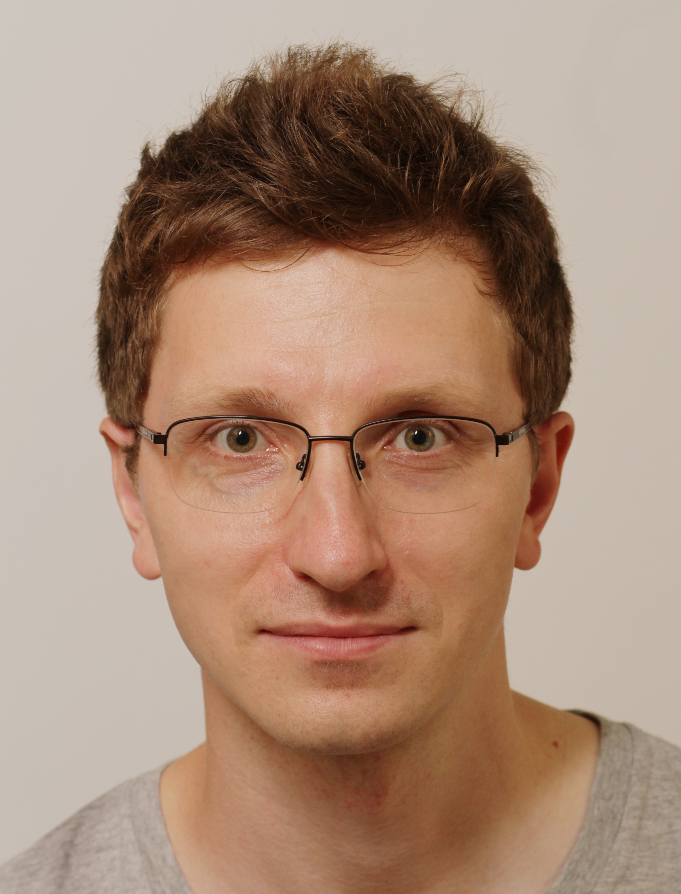

I became interested in condensed matter physics while working at the Shubnikov Institute of Crystallography in Moscow, where I investigated targeted drug delivery systems based on porous inorganic particles such as TiO2 and CaCO3. This research led to my Master’s thesis, which I defended at the Department of Physics of Lomonosov Moscow State University in 2010.
After graduation, I decided to step away from academia and gain professional experience. I worked as a data analyst and later as a freelance civil engineer. This experience gave me a broader perspective on my professional goals and strengthened my motivation to return to scientific research.
This eventually led me to pursue a PhD in Physics at Sapienza University of Rome, where I defended my PhD thesis in 2025. My doctoral research focused on the search for high-Tc superconductivity in silver fluorides, quantum antiferromagnets predicted to be close analogues of the cuprates.